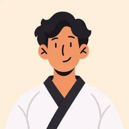

Coleção baseada nos dois avatares originais. Personagens nas cenas e objetos nas conquistas; arquivos WebP com transparência, sem palavras ou metas desenhadas.
Alternar claro/escuro Comparar conquistas em progresso
Ver composição dos pilotos em cards desktop e celular